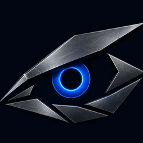
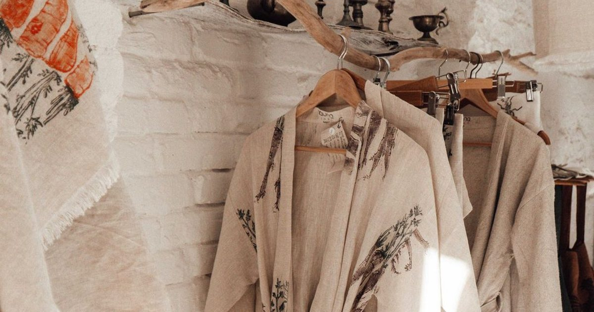
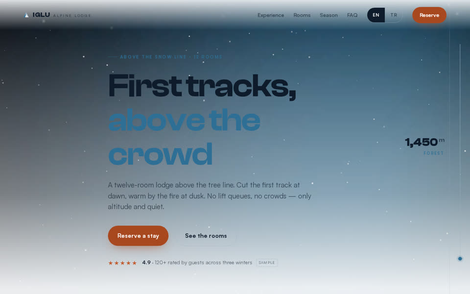
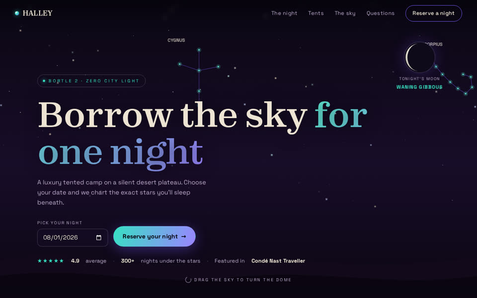
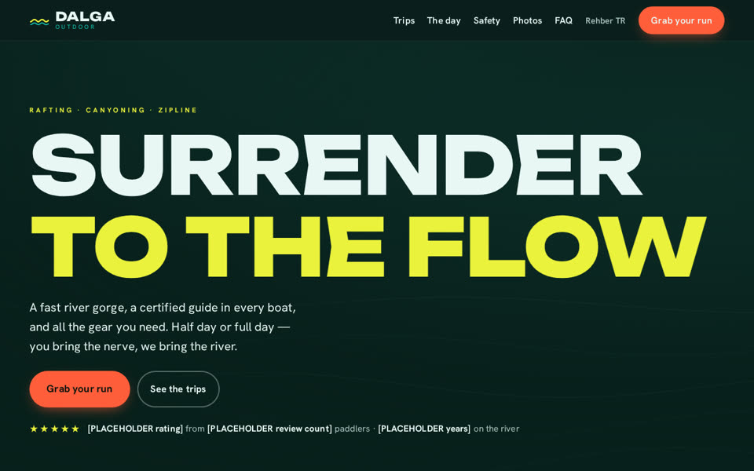
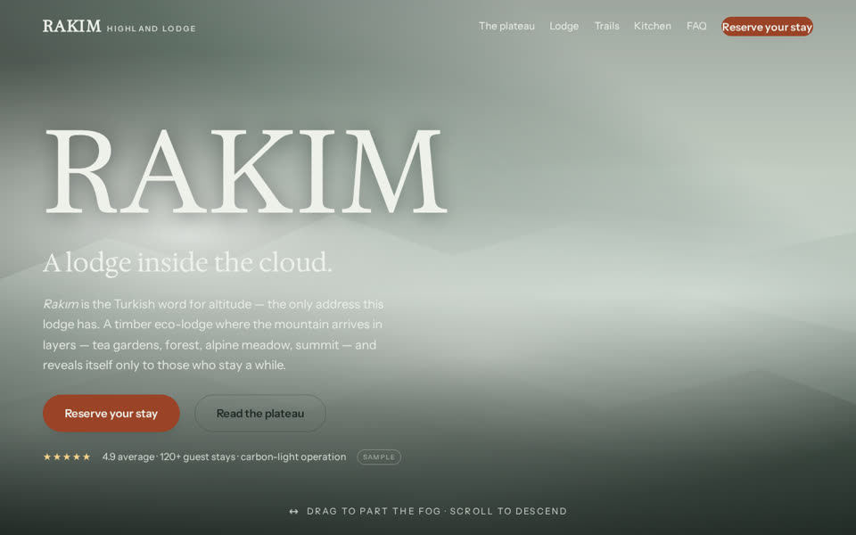
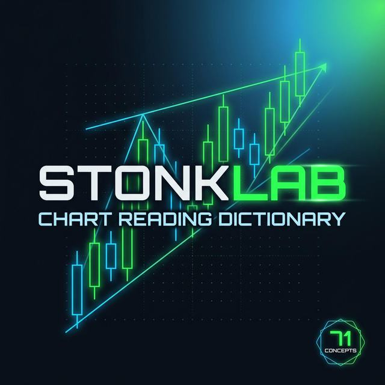
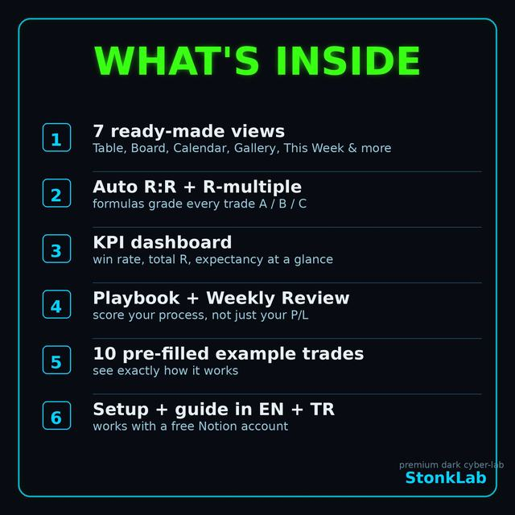
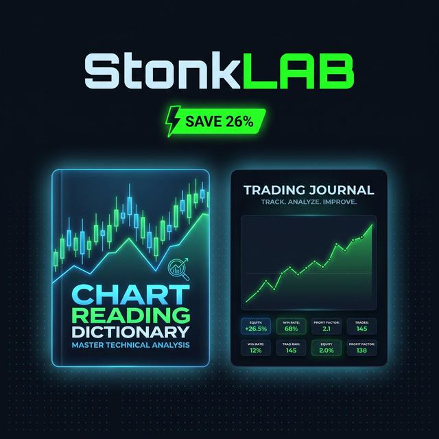

Alışılmış yol
- Toplantı üstüne toplantı, teklif belirsiz
- Fiyat "duruma göre" değişir
- Site teslim edilir, sonra kimse bakmaz
- Randevu/soru WhatsApp'ta kaybolur

IRON VISIONTurizm işletmesi, esnaf ya da küçük stüdyo fark etmez: önce çalışan örneği görürsünüz, sonra karar verirsiniz.
Bir iş anlatın, gerisini konuşalım Aşağı kaydırınNeden böyle
Küçük bir işletme için site ya da otomasyon işi genelde iki şekilde bozulur: ya kimse elini sürmez, ya da ajans süreci aylara, faturayı belirsizliğe yayar. Biz işi ürüne çevirdik.
Ne yapıyoruz
Hayalinizdeki site, atölyemizde size özel işlenir. Şablon değil; markanıza, hikâyenize ve müşterinize göre tek tek şekillendirilir.
Siteniz hep bakımlı, hep güncel. Kilit değil, abonelik: güncelleme, iyileştirme ve gözetim bizden.
Müşteriniz WhatsApp'tan yazar, bot uygun saati gösterir, randevuyu sizin için düşürür. 10 gün ücretsiz denersiniz.
Size hep iki yol sunarız, artısını eksisini dürüstçe anlatırız; karar sizin, tavsiyemiz kayda geçer.
Sitenizi iki şekilde ayağa kaldırırız:
Alan adı, sunucu ve bakım tek bir yıllık abonelikte toplanır; hiçbir teknik yükü siz taşımazsınız. Alan adı her zaman sizin adınıza alınır: tapu sizde, anahtar sizde — biz yalnızca bakım ustanızız.
Kendi alan adınız zaten varsa siz getirin; biz sitenizi kurar, canlıya alır ve bakımını sürdürürüz. Sahiplik baştan sona sizde kalır.
Dürüstçe söyleyelim
Karar yorgunluğu istemiyoruz; kime yaradığımızı ve kime yaramadığımızı baştan söylüyoruz.
Raftakiler
Fiyatı burada yazmıyoruz — her iş farklı büyüklükte. İlk mesajdan sonra iki net yol ve toplam bedeli söyleriz.
Müşteriniz yazar, bot uygun saati gösterir, randevuyu sizin için düşürür. 10 gün kendi işletmenizde ücretsiz çalışır, kart bilgisi istemeyiz; beğenmezseniz kaldırırız.
Ücretsiz deneyinAşağıdaki işler galerisindeki atölye işçiliğiyle aynı: size özel tasarım, iki net kurulum yolu, alan adı her zaman sizin.
İşleri görünTrading sözlüğü, günlük şablonu ve başlangıç paketi Etsy mağazamızda satışta. Kart bilgisini biz görmeyiz, ödeme Etsy üzerinden geçer.
Etsy mağazasını gezinGumroad · yakındabağlantı hazırlanıyor
İşte kanıt
Konsept değil; çalışan, canlı işler. Kartın üzerine gelin, tıklayın işin kendisine gidin.

ATÖLYE BUTİKEsnaf paketi — küçük işletmeye özel vitrin
IGLUAlpine Lodge
HALLEYDesert Camp
DALGAOutdoor
RAKIMHighland Eco-Lodge
STONKLABChart Reading Dictionary — Etsy
STONKLABTrading Journal — Etsy
STONKLABStarter Bundle — EtsyNasıl çalışırız
Aşağıdaki formdan aklınızdaki işi birkaç cümleyle yazın. 24 saat içinde döneriz.
Size uygun örneği ve iki kurulum yolunu gösteririz; artısını eksisini konuşuruz, karar sizindir.
İş canlıya alınır, bakım abonelikle devam eder — istediğiniz an bırakabilirsiniz.
Sık sorulanlar
Her iş farklı büyüklükte; ilk mesajdan sonra size iki net yol ve toplam bedeli söyleriz — sürpriz ek kalem çıkmaz.
10 gün boyunca kendi işletmenizde ücretsiz çalışır, kart bilgisi istemeyiz; beğenmezseniz kaldırırız, hiçbir şey ödemezsiniz.
Basit bir vitrin site birkaç günde, size özel işlenmiş bir site iki-üç haftada teslim edilir; süre ilk görüşmede netleşir.
Güncelleme, küçük değişiklik istekleri ve teknik gözetim; alan adı ve barındırma her zaman sizin adınıza kayıtlı kalır.
Kurulum tamamlanmadan önce herhangi bir aşamada durabilirsiniz. Bakım aboneliği ay be ay işler, istediğiniz an bırakabilirsiniz.
Doğrudan Etsy mağazamızdan; ödeme Etsy üzerinden güvenle geçer, kart bilgisini biz görmeyiz.
Hayır. İş takibi yazılı ve tek kanaldan — bu formdan — yürür. WhatsApp randevu botu ayrı bir üründür, bizim destek hattımız değil; bu yüzden mesai dışı beklenti ve karışıklık olmaz.
Sıra sizde
Adınızı, e-postanızı ve aklınızdaki işi yazın. Size iki yol sunalım, kararı birlikte verelim.
Mesajınız yalnızca e-postamıza düşer; hiçbir yerde saklanmaz, üçüncü kişilerle paylaşılmaz. 24 saat içinde size döneriz.